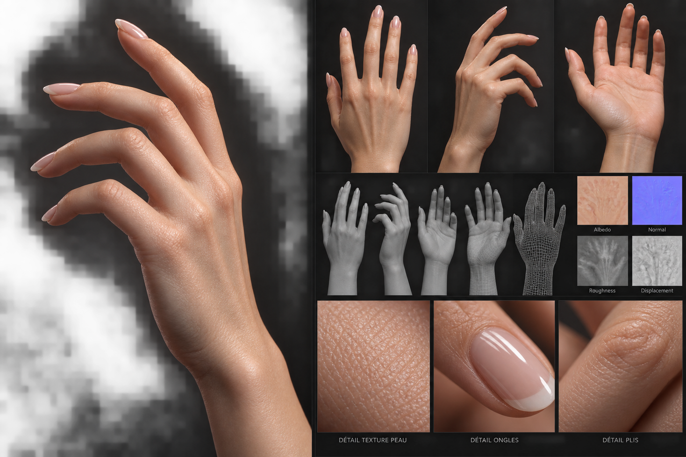
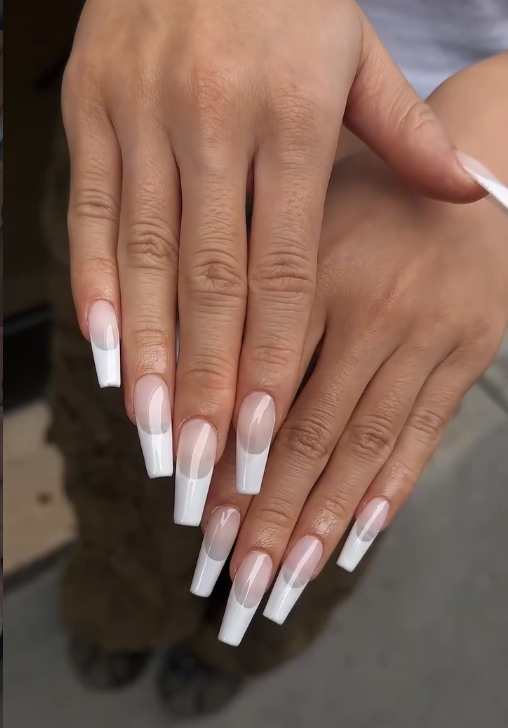
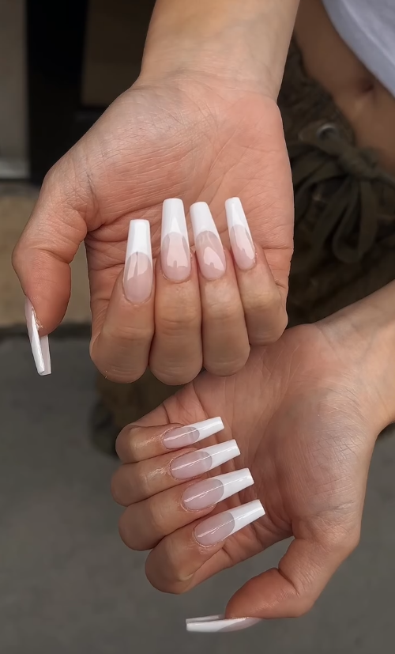

LE NAIL STUDIO, RÉINVENTÉ
À vous de jouer.
Une main. Mille possibilités.
Créez la manucure qui ne ressemble qu’à vous.
✧ VOTRE CRÉATIONAperçu de référence

↔ Glissez pour tourner · Scrollez pour zoomer
n.LA TOUCHE FINALE
Made for you.


VOTRE MOOD, VOTRE MANUCURE
Votre signature.
Les deux photos de référence choisies pour votre résultat final. Elles restent identiques ; vos personnalisations sont visibles dans le studio 3D.
✧ Un peu de vous, jusqu’au bout des doigts.LE STUDIO NAILUSE